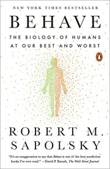

Behave: The Biology of Humans at Our Best and Worst
Book·Robert Sapolsky, 2017·行为

Explains the same behavior in layers, from milliseconds to millions of years. It is a long book.
- Author
- Robert Sapolsky
- Year
- 2017
- Difficulty
- Advanced
- Kind
- Overview
- Schools
- Stress Physiology, Ethology
- Core theories
- Multi-level Biology of Behavior
Editions
- Chinese edition 《行為》 羅伯．薩波斯基 · tr. 吳芠 · 八旗文化 · 2019 Douban 9.4 (631 ratings) Douban page ↗
- English edition Behave: The Biology of Humans at Our Best and Worst Robert M. Sapolsky · Penguin Press, first edition · 2017 Open Library ↗